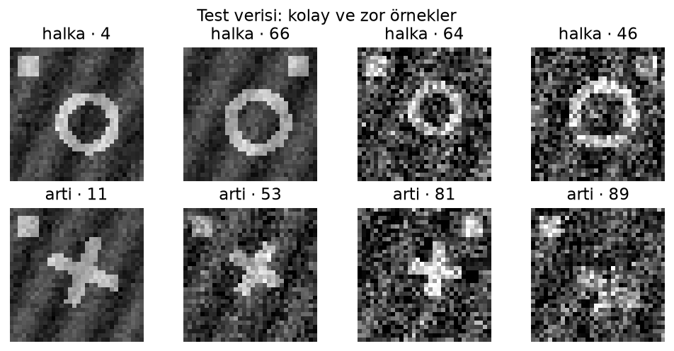
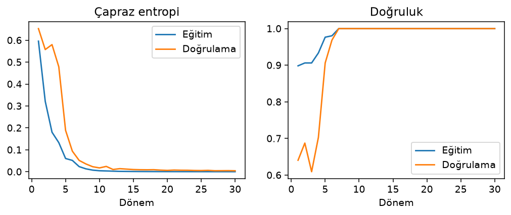
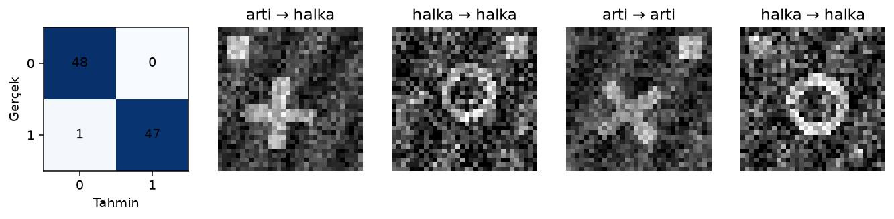
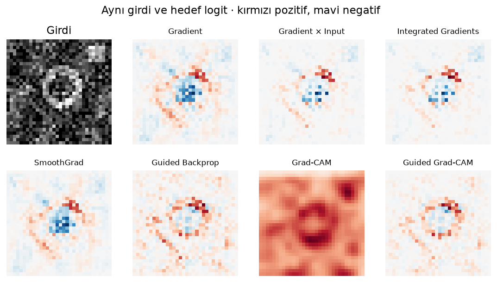
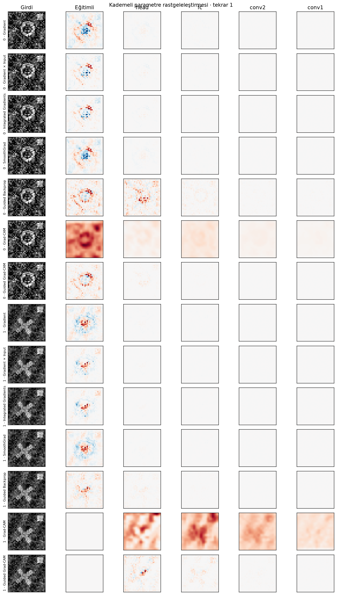
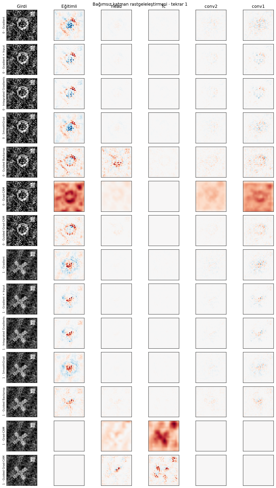
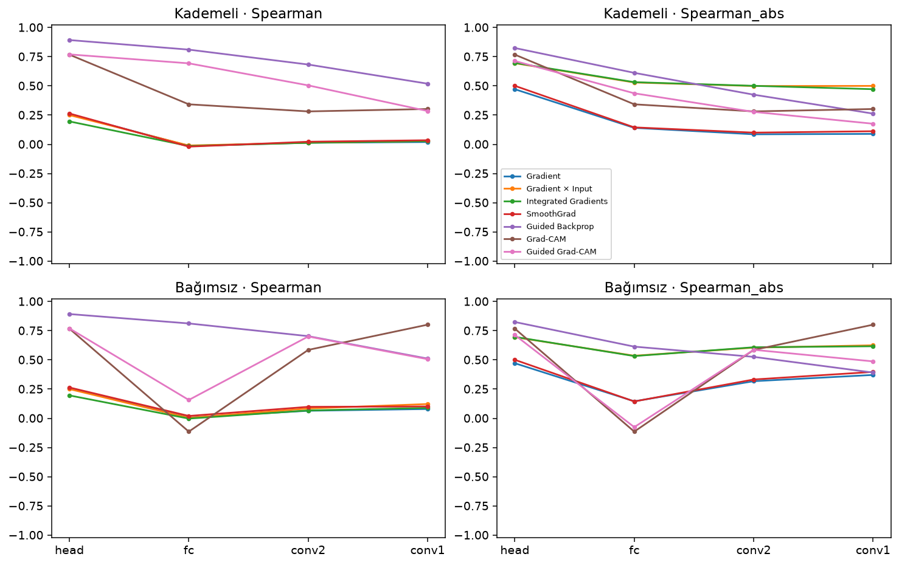
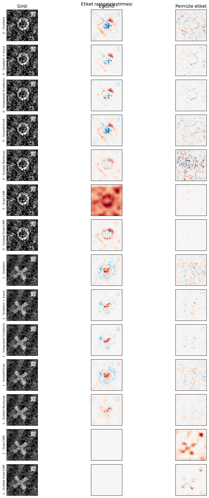
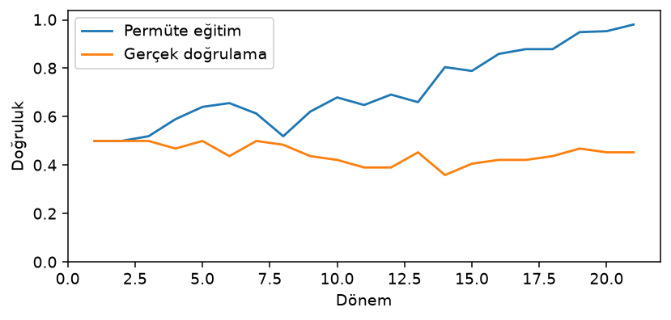
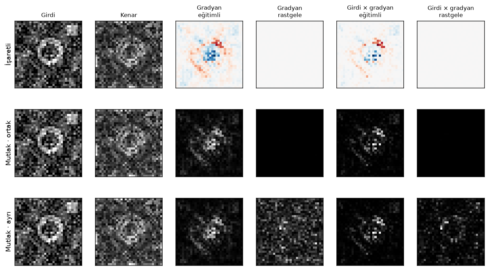

Önem Haritaları İçin Sağlama Testleri
1. Araştırma amacı ve önceden belirlenen hipotezler
Tania El Hawari — 20259258043
Kaynak: Julius Adebayo, Justin Gilmer, Michael Muelly, Ian Goodfellow, Moritz Hardt ve Been Kim, Sanity Checks for Saliency Maps, NeurIPS 2018, arXiv v3.
Seçenek 1 kapsamında, bir açıklamanın ikna edici görünümü ile öğrenilmiş parametrelere veya etiket ilişkisine duyarlılığı arasındaki fark incelendi. Deneyler açıklamalara yönelik kontrollü müdahaleler kullanır. Bir modelin sınıflandırma başarısı tek başına açıklamasını doğrulamaz.
- H1: Çıkıştan girişe doğru rastgeleleştirme, temel gradyanın işaretli sıra benzerliğini düşürür. Yalnızca bir katmanı yeniden başlatan kontrolde düşüşün katmana göre değişmesi beklenir.
- H2: Rastgele etiketleri ezberleyen modelin gerçek etiketlerle test doğruluğu şans düzeyine yaklaşır. Aynı örnek ve hedef sınıf için haritaların benzerliği yöntemlere göre farklılaşır. Ezberleme zayıf kalırsa bu müdahalenin yorumu sınırlıdır.
- H3: Özellikle girdi ile çarpılan yöntemlerde geometrik yapı görünür kalabilir. İşaretli ve mutlak sıra benzerlikleri farklı davranabilir. Bir kenar haritası modelden bağımsız görsel kontrol sağlar. Evrensel geçme eşiği kullanılmaz.
Uygulama ve rapor, yapay zekâ destekli kodlama yardımıyla hazırlandı. Defterin yürütülmesi ve rapor çıktılarının teknik karşılaştırması bu yardım kapsamında gerçekleştirildi.
2. Kullanılan Python Kütüphaneleri
| Kütüphane | Kullanım ve gerekçe |
|---|---|
| Python standart kütüphanesi | pathlib dosya yolları, copy model kopyaları, json defter okuma, re rapor biçimleme, hashlib görüntü bütünlüğü, html güvenli tablo biçimleme |
| NumPy | Tohumlu veri, piksel gürültüsü, vektör ve histogram işlemleri |
| pandas | Veri manifestosunu yazma ve okuma, ölçüm tabloları ve gruplama |
| Pillow | NumPy piksel dizilerini PNG olarak kaydetme, görüntüleri okuma, EXIF yönünü düzeltme, gri tona dönüştürme ve yeniden boyutlandırma |
| PyTorch | CNN katmanları, DataLoader, kayıp ve Adam, autograd ile hedef logit türevi |
| SciPy | Eşit değerlere ortalama sıra ve SSIM için Gauss filtreleme |
| Matplotlib | Deney figürleri ve PNG çıktıları |
| JupyterLab (isteğe bağlı), ipykernel ve matplotlib-inline | Etkileşimli çalıştırma ortamı |
Bunlar genel amaçlı araçlardır. Açıklama yöntemlerinin hesaplama adımları aşağıdaki hücrelerde tanımlanır.
3. Matematiksel temel
$x\in[0,1]^{32\times32}$ bir gri tonlu girdi, $\theta$ ağ parametreleri, $s_\theta(x)\in\mathbb{R}^2$ sınıf logitleridir. Hedef sınıf $c$ için açıklama aynı $s_c$ üzerinden hesaplanır. Kayıp $-\log(\exp(s_y)/\sum_j\exp(s_j))$ gerçek sınıf $y$ için normalize olasılığı büyütür. Eğitimde geri yayılım zincir kuralıyla kaybın parametre türevini, açıklamada ise logitin girdi türevini hesaplar.
$$G_c(x)=\nabla_x s_c(x),\qquad A_c(x)=x\odot G_c(x).$$
$G$ yerel birinci türevdir, $\odot$ piksel başına çarpımdır. Girdiyle çarpım, türev değişse bile benzer girdi bölgelerini öne çıkarabilir.
$$IG_c(x)=(x-x_0)\odot\int_0^1 \left.\nabla_z s_c(z)\right|_{z=x_0+t(x-x_0)}dt.$$
$x_0=0$ siyah referans, $t$ yol parametresidir. Türev yol noktasındaki model girdisine göredir. Trapez yaklaşımı kullanılır. SmoothGrad, $N^{-1}\sum_i G_c(x+\epsilon_i)$ ile gürültülü girdilerdeki türevleri ortalar. $\epsilon_i$ bağımsız Gauss gürültüsüdür ve karşılaştırmalarda aynı örnekler tekrar kullanılır.
Guided Backpropagation (GBP), ReLU geri geçişinde üstten gelen türevi $r\,\mathbf{1}_{r>0}\mathbf{1}_{a>0}$ ile kapılar. $a$ ileri geçişteki ReLU öncesi değerdir. Bu değiştirilmiş geri geçiş, modelin sıradan türevi değildir.
Grad-CAM için $A^k$ son evrişim öznitelik haritası, $Z$ uzamsal konum sayısıdır. $\alpha_k=Z^{-1}\sum_{ij}\partial s_c/\partial A^k_{ij}$, $L^c=\operatorname{ReLU}(\sum_k\alpha_k A^k)$ kullanılır. Harita bilineer büyütülür. Guided Grad-CAM, bu haritayı GBP ile çarpar. Düşük uzamsal çözünürlük, negatif kanıtın atılması, referans seçimi ve yerel doygunluk yöntemlerin yorum sınırlarıdır.
4. Veri üretimi ve hazırlık
Halka ve artı, sınıfı belirleyen gerçek şekillerdir. Köşedeki açık işaret eğitimde sınıfla %85 olasılıkla uyumlu seçilir. Doğrulama ve testte işaret, sınıftan bağımsız üretilir. Arka plan dalgaları, Gauss gürültüsü, yön, konum, ölçek ve şerit biçimli kısmi örtülme değişir. Sınıflar her bölmede eşit sayıdadır. Tohum ve görüntü karması veri kökenini izlemeyi sağlar.
Fotoğraf protokolü, değişen ışık, açı, arka plan ve örtülme koşullarında öğrencinin çektiği halka ve artı nesnelerini öngörür. Her fiziksel nesne ve ilişkili çekim oturumları tek bölmeye atanır. Manifesto biçimi ve PHOTO_MODE ayarı README’de açıklanır. Kaydedilmiş araştırma koşusu 416 sentetik görüntü kullanır. Öğretmenin gerçek dünya verisiyle canlı kod gerekliliği için kişisel fotoğraf koşusu ayrıdır. Fotoğraf modu CSV, grafik ve raporları foto-sonuclari/ altında üretir. Fotoğraflar EXIF yönüne göre düzeltilir, gri tona çevrilir ve nesneyi merkezden kesmemek için en-boy oranı korunarak 32×32 tuvale sığdırılır. Girdi paneli, nesnenin bu ölçekte ayırt edilebilirliğini incelemek için kullanılır.
5. Evrişim ağı ve eğitim
32×32×1 → Conv(12, 3×3) → ReLU → 2×2 havuz → Conv(24, 3×3) → ReLU → 2×2 havuz → 1536 → Dense(96) → ReLU → Dense(2). Maksimum havuzlama yerel tepkileri korur. Tam bağlı katman konum bilgisini kullanabilir ve rastgele etiketleri ezberlemek için kapasite sağlar. Adam başlangıç adımı 0,002 ve mini yığın büyüklüğü 32’dir. Gerçek etiketli model, doğrulama kaybı en düşük olan dönemdeki ağırlıklarla değerlendirilir. Rastgele etiketli model, eğitim doğruluğu %97’ye eriştiğinde veya dönem bütçesi tükendiğinde durur. Test etiketleri model seçiminde kullanılmaz.
6. Önem haritalarının uygulanması
Her modelde aynı gerçek sınıf logiti kullanılır. Bu seçim, modelin tahmini değiştiğinde farklı bir hedefi karşılaştırmayı önler. Autograd yalnızca türev hesaplar. Integrated Gradients için 32 trapez aralığı ve uçlar dâhil 33 değerlendirme noktası kullanılır. SmoothGrad, 16 gürültülü girdiyi ortalar. Gauss gürültüsünün ortalaması sıfır, standart sapması 0,08’dir. Değer, [0; 1] ölçeğindeki piksel girdisine eklenir. ReLU geri geçiş kuralı, yol integrali, gürültü ortalaması ve kanal ağırlıkları bu defterde uygulanır. SmoothGrad yerel gürültüyü azaltabilir, ancak gürültü ölçeğine bağlıdır. Grad-CAM ve Guided Grad-CAM için sıfır harita geçerli bir çıktıdır ve korelasyonu tanımsız olabilir.
7. Benzerlik ölçütleri ve kontroller
Spearman $\rho$ eşit değerlere ortalama sıra verildikten sonra iki sıra vektörünün Pearson korelasyonudur. İşaretli ve mutlak değerli haritalar ayrı değerlendirilir. Sabit bir vektör için korelasyon tanımsızdır. Böyle çiftler NaN olarak kaydedilir ve yalnızca tanımlı örnekler özetlenir. Rapor hem $n$ hem örnek standart sapmasını gösterir.
$$\operatorname{SSIM}(a,b)=\frac{(2\mu_a\mu_b+C_1)(2\sigma_{ab}+C_2)} {(\mu_a^2+\mu_b^2+C_1)(\sigma_a^2+\sigma_b^2+C_2)}.$$
Yerel momentler Gauss ağırlıklıdır. Her işaretli çift ortak mutlak maksimumla ölçeklenip [0; 1] aralığına taşınır. $C_1=(0{,}01)^2$ ve $C_2=(0{,}03)^2$ düşük varyans bölgelerinde bölümü kararlı kılar. Yerel değerlerin ortalaması raporlanır.
HOG, merkez fark gradyanlarının işaretsiz yönlerini dokuz kovaya toplar. Her 8×8 hücrede oylar gradyan büyüklüğüyle ağırlıklandırılır ve hücre histogramı L2 normuyla ölçeklenir. Birleştirilen betimleyicilerin Pearson korelasyonu yön yapısını ölçer. Bu basit HOG, makalenin blok normalizasyonlu kütüphane ayarının aynısı değildir.
Veri ve temel model sonuçları
Veri türü sentetik. Eğitimde 256, doğrulamada 64, testte 96 görüntü kullanıldı. PyTorch 2.15.0+cpu, işlemci yürütmesi, tohum 7342.
| Model | Eğitim doğruluğu | Test doğruluğu | Eğitim kaybı | Test kaybı | Eğitim dönemi |
|---|---|---|---|---|---|
| Gerçek etiket | 1,0000 | 0,9896 | 0,0003 | 0,0229 | 30 |
| Permüte etiket | 0,9805 | 0,4375 | 0,1696 | 1,4303 | 21 |
Temel modelin test karışıklık matrisi (gerçek × tahmin): [[48, 0], [1, 47]]. Doğrulama kaybı model kontrol noktası seçiminde kullanıldı. Test verisi ağırlık güncellemesinde kullanılmadı.




8. Deney 1 · Model parametrelerinin rastgeleleştirilmesi
Dört parametre bloğu çıkıştan girişe doğru head → fc → conv2 → conv1 sırasıyla değiştirilir. Her blok için PyTorch katmanının varsayılan başlangıç dağılımından yeni ağırlık ve bias çekilir. Bağımsız testte yalnızca ilgili blok değişir. Kademeli testte bu sıradaki önceki değişimler birikir. Aynı tekrardaki iki yaklaşım, her blok için aynı rastgele ağırlıkları kullanır. Üç tohum ve 16 test görüntüsü kullanılır. Standart sapma ve sayılar görüntü × tohum çiftlerinin betimleyici özetidir. Aynı görüntünün tekrarları bağımsız gözlem değildir.



9. Deney 2 · Eğitim etiketlerinin permütasyonu
Eğitim görüntüleri ve sınıf frekansları korunur. Sabit bir permütasyon eğitim etiketlerini görüntülerle yeniden eşler. Yeni ağ, temel ağ ile aynı başlangıç tohumunu ve mimariyi kullanır. Doğrulama ve test etiketleri korunur. Orijinal ve rastgele etiketli ağlar aynı test pikselleri ve aynı hedef logitle karşılaştırılır. Yüksek permüte eğitim doğruluğu, görüntülerle yapılan rastgele eşleştirmelerin ezberlenmesine ilişkin bir kontroldür.
Permütasyon sonucu eğitim etiketlerinin %48,4 kadarı değişti. Gerçek test etiketlerine göre doğruluk %43,75, permüte eğitim etiketlerine göre doğruluk %98,05. Makaledeki %95 ölçütünü aştı.


10. Seçenek 1: Zafiyet ve Manipülasyon Analizi
Rastgele ağırlıklı ağda aynı şekil veya kenarların görünmesi, tek başına ağın doğru sınıf ilişkisini öğrendiği anlamına gelmez. Aşağıdaki kontrol, ağ kullanmadan yalnızca görüntüdeki değişim büyüklüğünü gösterir. Aynı örnekte eğitimli ve tüm blokları sıfırdan başlatılmış ağların haritaları yer alır. İlk iki sıra işaretli ve mutlak atıfları yöntem başına ortak ölçekle gösterir. Üçüncü sıra her haritayı kendi maksimumuna böler. Bu sıra, genlik farkını saklayabilen harita başına normalizasyonu gözle görünür kılar. Kenar haritası görsel bir kıyas noktasıdır. Onun görünüşü bir insan değerlendirmesi veya nedensel doğruluk ölçümü değildir.
Parametre müdahalesi model bağımlılığını, etiket permütasyonu eğitimdeki örnek–etiket ilişkisine bağımlılığı yoklar. Bir yöntemin büyük değişim göstermesi onun kesinlikle doğru olduğunu kanıtlamaz. Düşük işaretli benzerlik ve aynı anda daha yüksek mutlak benzerlik gözlenirse, işareti atmanın bir müdahaleyi gizleyebildiği anlaşılır. Bu ayrışma görülmezse sonuç olduğu gibi raporlanır.
Ölçülen zafiyet ve sonuç
Tüm parametre blokları yeniden başlatıldığında Gradient için ortalama işaretli Spearman 0,019 oldu. Gradient × Input için işaretli ortalama 0,027, mutlak ortalama 0,500 ve fark +0,473 oldu. Bu koşuda mutlak görselleştirme daha yüksek sıra benzerliği taşıdı. Ortak ölçek genlik farkını korur. Her haritayı kendi içindeki maksimuma göre gösteren son sıra, zayıf sinyali büyütüp görsel yapının daha belirgin görünmesine yol açabilir. Girdi ve kenar panelleri modelden bağımsız kıyas sağlar. Tek bir görüntünün görünümü bütün yöntemler hakkında hüküm vermek için yeterli değildir.
Kademeli ilk adımda Gradient 0,258, Grad-CAM 0,768, Guided Backprop 0,892 işaretli sıra benzerliği verdi. Guided Backprop tüm katmanlar değiştiğinde 0,519 oldu. Bu değerler üst ve alt katman davranışının aynı olup olmadığını bu ağ için gösterir ve makaledeki tüm mimarilere genellenemez. Permütasyon kontrolünde Gradient ortalaması -0,027 oldu. Tanımsız ölçümlerin sayısı toplam çift ile tanımlı çift sayısı arasındaki farktan okunabilir.

Tüm benzerlik ölçümleri
Standart sapma yalnızca tanımlı çiftlerden hesaplanır. Bir standart sapma için en az iki tanımlı çift gerekir.
| Deney | Aşama | Yöntem | Ölçüt | Ortalama | Örnek standart sapması | Tanımlı çift | Toplam çift |
|---|---|---|---|---|---|---|---|
| Kademeli | head | Gradient | Spearman | 0,258 | 0,602 | 48 | 48 |
| Kademeli | head | Gradient × Input | Spearman | 0,250 | 0,577 | 48 | 48 |
| Kademeli | head | Integrated Gradients | Spearman | 0,196 | 0,591 | 48 | 48 |
| Kademeli | head | SmoothGrad | Spearman | 0,264 | 0,634 | 48 | 48 |
| Kademeli | head | Guided Backprop | Spearman | 0,892 | 0,152 | 48 | 48 |
| Kademeli | head | Grad-CAM | Spearman | 0,768 | 0,245 | 21 | 48 |
| Kademeli | head | Guided Grad-CAM | Spearman | 0,770 | 0,178 | 21 | 48 |
| Bağımsız | head | Gradient | Spearman | 0,258 | 0,602 | 48 | 48 |
| Bağımsız | head | Gradient × Input | Spearman | 0,250 | 0,577 | 48 | 48 |
| Bağımsız | head | Integrated Gradients | Spearman | 0,196 | 0,591 | 48 | 48 |
| Bağımsız | head | SmoothGrad | Spearman | 0,264 | 0,634 | 48 | 48 |
| Bağımsız | head | Guided Backprop | Spearman | 0,892 | 0,152 | 48 | 48 |
| Bağımsız | head | Grad-CAM | Spearman | 0,768 | 0,245 | 21 | 48 |
| Bağımsız | head | Guided Grad-CAM | Spearman | 0,770 | 0,178 | 21 | 48 |
| Kademeli | fc | Gradient | Spearman | -0,013 | 0,080 | 48 | 48 |
| Kademeli | fc | Gradient × Input | Spearman | -0,010 | 0,083 | 48 | 48 |
| Kademeli | fc | Integrated Gradients | Spearman | -0,015 | 0,087 | 48 | 48 |
| Kademeli | fc | SmoothGrad | Spearman | -0,020 | 0,089 | 48 | 48 |
| Kademeli | fc | Guided Backprop | Spearman | 0,811 | 0,027 | 48 | 48 |
| Kademeli | fc | Grad-CAM | Spearman | 0,342 | 0,345 | 24 | 48 |
| Kademeli | fc | Guided Grad-CAM | Spearman | 0,693 | 0,125 | 24 | 48 |
| Bağımsız | fc | Gradient | Spearman | 0,006 | 0,082 | 48 | 48 |
| Bağımsız | fc | Gradient × Input | Spearman | 0,004 | 0,088 | 48 | 48 |
| Bağımsız | fc | Integrated Gradients | Spearman | -0,003 | 0,090 | 48 | 48 |
| Bağımsız | fc | SmoothGrad | Spearman | 0,020 | 0,091 | 48 | 48 |
| Bağımsız | fc | Guided Backprop | Spearman | 0,812 | 0,022 | 48 | 48 |
| Bağımsız | fc | Grad-CAM | Spearman | -0,114 | 0,119 | 8 | 48 |
| Bağımsız | fc | Guided Grad-CAM | Spearman | 0,157 | 0,131 | 8 | 48 |
| Kademeli | conv2 | Gradient | Spearman | 0,013 | 0,035 | 48 | 48 |
| Kademeli | conv2 | Gradient × Input | Spearman | 0,014 | 0,043 | 48 | 48 |
| Kademeli | conv2 | Integrated Gradients | Spearman | 0,013 | 0,043 | 48 | 48 |
| Kademeli | conv2 | SmoothGrad | Spearman | 0,022 | 0,038 | 48 | 48 |
| Kademeli | conv2 | Guided Backprop | Spearman | 0,683 | 0,022 | 48 | 48 |
| Kademeli | conv2 | Grad-CAM | Spearman | 0,282 | 0,410 | 24 | 48 |
| Kademeli | conv2 | Guided Grad-CAM | Spearman | 0,504 | 0,250 | 24 | 48 |
| Bağımsız | conv2 | Gradient | Spearman | 0,065 | 0,049 | 48 | 48 |
| Bağımsız | conv2 | Gradient × Input | Spearman | 0,084 | 0,057 | 48 | 48 |
| Bağımsız | conv2 | Integrated Gradients | Spearman | 0,067 | 0,055 | 48 | 48 |
| Bağımsız | conv2 | SmoothGrad | Spearman | 0,098 | 0,064 | 48 | 48 |
| Bağımsız | conv2 | Guided Backprop | Spearman | 0,703 | 0,025 | 48 | 48 |
| Bağımsız | conv2 | Grad-CAM | Spearman | 0,585 | 0,258 | 24 | 48 |
| Bağımsız | conv2 | Guided Grad-CAM | Spearman | 0,700 | 0,027 | 24 | 48 |
| Kademeli | conv1 | Gradient | Spearman | 0,019 | 0,027 | 48 | 48 |
| Kademeli | conv1 | Gradient × Input | Spearman | 0,027 | 0,030 | 48 | 48 |
| Kademeli | conv1 | Integrated Gradients | Spearman | 0,027 | 0,040 | 48 | 48 |
| Kademeli | conv1 | SmoothGrad | Spearman | 0,035 | 0,040 | 48 | 48 |
| Kademeli | conv1 | Guided Backprop | Spearman | 0,519 | 0,044 | 48 | 48 |
| Kademeli | conv1 | Grad-CAM | Spearman | 0,302 | 0,423 | 21 | 48 |
| Kademeli | conv1 | Guided Grad-CAM | Spearman | 0,285 | 0,228 | 21 | 48 |
| Bağımsız | conv1 | Gradient | Spearman | 0,079 | 0,038 | 48 | 48 |
| Bağımsız | conv1 | Gradient × Input | Spearman | 0,122 | 0,047 | 48 | 48 |
| Bağımsız | conv1 | Integrated Gradients | Spearman | 0,089 | 0,045 | 48 | 48 |
| Bağımsız | conv1 | SmoothGrad | Spearman | 0,101 | 0,048 | 48 | 48 |
| Bağımsız | conv1 | Guided Backprop | Spearman | 0,511 | 0,051 | 48 | 48 |
| Bağımsız | conv1 | Grad-CAM | Spearman | 0,801 | 0,081 | 24 | 48 |
| Bağımsız | conv1 | Guided Grad-CAM | Spearman | 0,506 | 0,054 | 24 | 48 |
| Etiket | Permütasyon | Gradient | Spearman | -0,027 | 0,026 | 16 | 16 |
| Etiket | Permütasyon | Gradient × Input | Spearman | -0,020 | 0,030 | 16 | 16 |
| Etiket | Permütasyon | Integrated Gradients | Spearman | -0,023 | 0,040 | 16 | 16 |
| Etiket | Permütasyon | SmoothGrad | Spearman | -0,043 | 0,034 | 16 | 16 |
| Etiket | Permütasyon | Guided Backprop | Spearman | 0,665 | 0,024 | 16 | 16 |
| Etiket | Permütasyon | Grad-CAM | Spearman | 0,211 | 0,111 | 8 | 16 |
| Etiket | Permütasyon | Guided Grad-CAM | Spearman | 0,349 | 0,045 | 8 | 16 |
| Kademeli | head | Gradient | Spearman_abs | 0,471 | 0,159 | 48 | 48 |
| Kademeli | head | Gradient × Input | Spearman_abs | 0,694 | 0,102 | 48 | 48 |
| Kademeli | head | Integrated Gradients | Spearman_abs | 0,697 | 0,101 | 48 | 48 |
| Kademeli | head | SmoothGrad | Spearman_abs | 0,501 | 0,165 | 48 | 48 |
| Kademeli | head | Guided Backprop | Spearman_abs | 0,824 | 0,213 | 48 | 48 |
| Kademeli | head | Grad-CAM | Spearman_abs | 0,768 | 0,245 | 21 | 48 |
| Kademeli | head | Guided Grad-CAM | Spearman_abs | 0,713 | 0,208 | 21 | 48 |
| Bağımsız | head | Gradient | Spearman_abs | 0,471 | 0,159 | 48 | 48 |
| Bağımsız | head | Gradient × Input | Spearman_abs | 0,694 | 0,102 | 48 | 48 |
| Bağımsız | head | Integrated Gradients | Spearman_abs | 0,697 | 0,101 | 48 | 48 |
| Bağımsız | head | SmoothGrad | Spearman_abs | 0,501 | 0,165 | 48 | 48 |
| Bağımsız | head | Guided Backprop | Spearman_abs | 0,824 | 0,213 | 48 | 48 |
| Bağımsız | head | Grad-CAM | Spearman_abs | 0,768 | 0,245 | 21 | 48 |
| Bağımsız | head | Guided Grad-CAM | Spearman_abs | 0,713 | 0,208 | 21 | 48 |
| Kademeli | fc | Gradient | Spearman_abs | 0,141 | 0,046 | 48 | 48 |
| Kademeli | fc | Gradient × Input | Spearman_abs | 0,529 | 0,092 | 48 | 48 |
| Kademeli | fc | Integrated Gradients | Spearman_abs | 0,532 | 0,099 | 48 | 48 |
| Kademeli | fc | SmoothGrad | Spearman_abs | 0,145 | 0,052 | 48 | 48 |
| Kademeli | fc | Guided Backprop | Spearman_abs | 0,612 | 0,040 | 48 | 48 |
| Kademeli | fc | Grad-CAM | Spearman_abs | 0,342 | 0,345 | 24 | 48 |
| Kademeli | fc | Guided Grad-CAM | Spearman_abs | 0,437 | 0,176 | 24 | 48 |
| Bağımsız | fc | Gradient | Spearman_abs | 0,146 | 0,036 | 48 | 48 |
| Bağımsız | fc | Gradient × Input | Spearman_abs | 0,536 | 0,090 | 48 | 48 |
| Bağımsız | fc | Integrated Gradients | Spearman_abs | 0,533 | 0,091 | 48 | 48 |
| Bağımsız | fc | SmoothGrad | Spearman_abs | 0,144 | 0,042 | 48 | 48 |
| Bağımsız | fc | Guided Backprop | Spearman_abs | 0,614 | 0,038 | 48 | 48 |
| Bağımsız | fc | Grad-CAM | Spearman_abs | -0,114 | 0,119 | 8 | 48 |
| Bağımsız | fc | Guided Grad-CAM | Spearman_abs | -0,076 | 0,084 | 8 | 48 |
| Kademeli | conv2 | Gradient | Spearman_abs | 0,086 | 0,037 | 48 | 48 |
| Kademeli | conv2 | Gradient × Input | Spearman_abs | 0,499 | 0,098 | 48 | 48 |
| Kademeli | conv2 | Integrated Gradients | Spearman_abs | 0,501 | 0,097 | 48 | 48 |
| Kademeli | conv2 | SmoothGrad | Spearman_abs | 0,100 | 0,039 | 48 | 48 |
| Kademeli | conv2 | Guided Backprop | Spearman_abs | 0,425 | 0,034 | 48 | 48 |
| Kademeli | conv2 | Grad-CAM | Spearman_abs | 0,282 | 0,410 | 24 | 48 |
| Kademeli | conv2 | Guided Grad-CAM | Spearman_abs | 0,278 | 0,313 | 24 | 48 |
| Bağımsız | conv2 | Gradient | Spearman_abs | 0,318 | 0,036 | 48 | 48 |
| Bağımsız | conv2 | Gradient × Input | Spearman_abs | 0,605 | 0,080 | 48 | 48 |
| Bağımsız | conv2 | Integrated Gradients | Spearman_abs | 0,608 | 0,079 | 48 | 48 |
| Bağımsız | conv2 | SmoothGrad | Spearman_abs | 0,332 | 0,035 | 48 | 48 |
| Bağımsız | conv2 | Guided Backprop | Spearman_abs | 0,526 | 0,033 | 48 | 48 |
| Bağımsız | conv2 | Grad-CAM | Spearman_abs | 0,585 | 0,258 | 24 | 48 |
| Bağımsız | conv2 | Guided Grad-CAM | Spearman_abs | 0,587 | 0,050 | 24 | 48 |
| Kademeli | conv1 | Gradient | Spearman_abs | 0,089 | 0,028 | 48 | 48 |
| Kademeli | conv1 | Gradient × Input | Spearman_abs | 0,500 | 0,093 | 48 | 48 |
| Kademeli | conv1 | Integrated Gradients | Spearman_abs | 0,472 | 0,111 | 48 | 48 |
| Kademeli | conv1 | SmoothGrad | Spearman_abs | 0,112 | 0,035 | 48 | 48 |
| Kademeli | conv1 | Guided Backprop | Spearman_abs | 0,263 | 0,067 | 48 | 48 |
| Kademeli | conv1 | Grad-CAM | Spearman_abs | 0,302 | 0,423 | 21 | 48 |
| Kademeli | conv1 | Guided Grad-CAM | Spearman_abs | 0,176 | 0,254 | 21 | 48 |
| Bağımsız | conv1 | Gradient | Spearman_abs | 0,371 | 0,042 | 48 | 48 |
| Bağımsız | conv1 | Gradient × Input | Spearman_abs | 0,625 | 0,076 | 48 | 48 |
| Bağımsız | conv1 | Integrated Gradients | Spearman_abs | 0,617 | 0,081 | 48 | 48 |
| Bağımsız | conv1 | SmoothGrad | Spearman_abs | 0,397 | 0,045 | 48 | 48 |
| Bağımsız | conv1 | Guided Backprop | Spearman_abs | 0,392 | 0,055 | 48 | 48 |
| Bağımsız | conv1 | Grad-CAM | Spearman_abs | 0,801 | 0,081 | 24 | 48 |
| Bağımsız | conv1 | Guided Grad-CAM | Spearman_abs | 0,487 | 0,058 | 24 | 48 |
| Etiket | Permütasyon | Gradient | Spearman_abs | 0,137 | 0,048 | 16 | 16 |
| Etiket | Permütasyon | Gradient × Input | Spearman_abs | 0,513 | 0,090 | 16 | 16 |
| Etiket | Permütasyon | Integrated Gradients | Spearman_abs | 0,506 | 0,097 | 16 | 16 |
| Etiket | Permütasyon | SmoothGrad | Spearman_abs | 0,162 | 0,048 | 16 | 16 |
| Etiket | Permütasyon | Guided Backprop | Spearman_abs | 0,320 | 0,048 | 16 | 16 |
| Etiket | Permütasyon | Grad-CAM | Spearman_abs | 0,211 | 0,111 | 8 | 16 |
| Etiket | Permütasyon | Guided Grad-CAM | Spearman_abs | 0,105 | 0,067 | 8 | 16 |
| Kademeli | head | Gradient | SSIM | 0,484 | 0,093 | 48 | 48 |
| Kademeli | head | Gradient × Input | SSIM | 0,675 | 0,090 | 48 | 48 |
| Kademeli | head | Integrated Gradients | SSIM | 0,687 | 0,094 | 48 | 48 |
| Kademeli | head | SmoothGrad | SSIM | 0,507 | 0,087 | 48 | 48 |
| Kademeli | head | Guided Backprop | SSIM | 0,720 | 0,078 | 48 | 48 |
| Kademeli | head | Grad-CAM | SSIM | 0,476 | 0,135 | 48 | 48 |
| Kademeli | head | Guided Grad-CAM | SSIM | 0,610 | 0,107 | 48 | 48 |
| Bağımsız | head | Gradient | SSIM | 0,484 | 0,093 | 48 | 48 |
| Bağımsız | head | Gradient × Input | SSIM | 0,675 | 0,090 | 48 | 48 |
| Bağımsız | head | Integrated Gradients | SSIM | 0,687 | 0,094 | 48 | 48 |
| Bağımsız | head | SmoothGrad | SSIM | 0,507 | 0,087 | 48 | 48 |
| Bağımsız | head | Guided Backprop | SSIM | 0,720 | 0,078 | 48 | 48 |
| Bağımsız | head | Grad-CAM | SSIM | 0,476 | 0,135 | 48 | 48 |
| Bağımsız | head | Guided Grad-CAM | SSIM | 0,610 | 0,107 | 48 | 48 |
| Kademeli | fc | Gradient | SSIM | 0,458 | 0,077 | 48 | 48 |
| Kademeli | fc | Gradient × Input | SSIM | 0,660 | 0,083 | 48 | 48 |
| Kademeli | fc | Integrated Gradients | SSIM | 0,682 | 0,080 | 48 | 48 |
| Kademeli | fc | SmoothGrad | SSIM | 0,482 | 0,073 | 48 | 48 |
| Kademeli | fc | Guided Backprop | SSIM | 0,538 | 0,055 | 48 | 48 |
| Kademeli | fc | Grad-CAM | SSIM | 0,480 | 0,185 | 48 | 48 |
| Kademeli | fc | Guided Grad-CAM | SSIM | 0,566 | 0,175 | 48 | 48 |
| Bağımsız | fc | Gradient | SSIM | 0,450 | 0,090 | 48 | 48 |
| Bağımsız | fc | Gradient × Input | SSIM | 0,653 | 0,093 | 48 | 48 |
| Bağımsız | fc | Integrated Gradients | SSIM | 0,678 | 0,087 | 48 | 48 |
| Bağımsız | fc | SmoothGrad | SSIM | 0,474 | 0,089 | 48 | 48 |
| Bağımsız | fc | Guided Backprop | SSIM | 0,538 | 0,071 | 48 | 48 |
| Bağımsız | fc | Grad-CAM | SSIM | 0,390 | 0,067 | 48 | 48 |
| Bağımsız | fc | Guided Grad-CAM | SSIM | 0,483 | 0,117 | 48 | 48 |
| Kademeli | conv2 | Gradient | SSIM | 0,461 | 0,076 | 48 | 48 |
| Kademeli | conv2 | Gradient × Input | SSIM | 0,661 | 0,082 | 48 | 48 |
| Kademeli | conv2 | Integrated Gradients | SSIM | 0,682 | 0,082 | 48 | 48 |
| Kademeli | conv2 | SmoothGrad | SSIM | 0,484 | 0,074 | 48 | 48 |
| Kademeli | conv2 | Guided Backprop | SSIM | 0,464 | 0,086 | 48 | 48 |
| Kademeli | conv2 | Grad-CAM | SSIM | 0,507 | 0,233 | 48 | 48 |
| Kademeli | conv2 | Guided Grad-CAM | SSIM | 0,541 | 0,246 | 48 | 48 |
| Bağımsız | conv2 | Gradient | SSIM | 0,441 | 0,106 | 48 | 48 |
| Bağımsız | conv2 | Gradient × Input | SSIM | 0,665 | 0,095 | 48 | 48 |
| Bağımsız | conv2 | Integrated Gradients | SSIM | 0,690 | 0,085 | 48 | 48 |
| Bağımsız | conv2 | SmoothGrad | SSIM | 0,480 | 0,098 | 48 | 48 |
| Bağımsız | conv2 | Guided Backprop | SSIM | 0,651 | 0,060 | 48 | 48 |
| Bağımsız | conv2 | Grad-CAM | SSIM | 0,721 | 0,281 | 48 | 48 |
| Bağımsız | conv2 | Guided Grad-CAM | SSIM | 0,781 | 0,220 | 48 | 48 |
| Kademeli | conv1 | Gradient | SSIM | 0,461 | 0,076 | 48 | 48 |
| Kademeli | conv1 | Gradient × Input | SSIM | 0,661 | 0,083 | 48 | 48 |
| Kademeli | conv1 | Integrated Gradients | SSIM | 0,682 | 0,081 | 48 | 48 |
| Kademeli | conv1 | SmoothGrad | SSIM | 0,484 | 0,074 | 48 | 48 |
| Kademeli | conv1 | Guided Backprop | SSIM | 0,446 | 0,096 | 48 | 48 |
| Kademeli | conv1 | Grad-CAM | SSIM | 0,432 | 0,160 | 48 | 48 |
| Kademeli | conv1 | Guided Grad-CAM | SSIM | 0,509 | 0,171 | 48 | 48 |
| Bağımsız | conv1 | Gradient | SSIM | 0,481 | 0,070 | 48 | 48 |
| Bağımsız | conv1 | Gradient × Input | SSIM | 0,721 | 0,060 | 48 | 48 |
| Bağımsız | conv1 | Integrated Gradients | SSIM | 0,717 | 0,071 | 48 | 48 |
| Bağımsız | conv1 | SmoothGrad | SSIM | 0,512 | 0,080 | 48 | 48 |
| Bağımsız | conv1 | Guided Backprop | SSIM | 0,652 | 0,066 | 48 | 48 |
| Bağımsız | conv1 | Grad-CAM | SSIM | 0,814 | 0,202 | 48 | 48 |
| Bağımsız | conv1 | Guided Grad-CAM | SSIM | 0,815 | 0,192 | 48 | 48 |
| Etiket | Permütasyon | Gradient | SSIM | 0,176 | 0,073 | 16 | 16 |
| Etiket | Permütasyon | Gradient × Input | SSIM | 0,463 | 0,144 | 16 | 16 |
| Etiket | Permütasyon | Integrated Gradients | SSIM | 0,521 | 0,169 | 16 | 16 |
| Etiket | Permütasyon | SmoothGrad | SSIM | 0,208 | 0,094 | 16 | 16 |
| Etiket | Permütasyon | Guided Backprop | SSIM | 0,622 | 0,103 | 16 | 16 |
| Etiket | Permütasyon | Grad-CAM | SSIM | 0,393 | 0,051 | 16 | 16 |
| Etiket | Permütasyon | Guided Grad-CAM | SSIM | 0,566 | 0,064 | 16 | 16 |
| Kademeli | head | Gradient | HOG | 0,283 | 0,161 | 48 | 48 |
| Kademeli | head | Gradient × Input | HOG | 0,482 | 0,154 | 48 | 48 |
| Kademeli | head | Integrated Gradients | HOG | 0,507 | 0,144 | 48 | 48 |
| Kademeli | head | SmoothGrad | HOG | 0,341 | 0,156 | 48 | 48 |
| Kademeli | head | Guided Backprop | HOG | 0,666 | 0,290 | 48 | 48 |
| Kademeli | head | Grad-CAM | HOG | 0,545 | 0,304 | 21 | 48 |
| Kademeli | head | Guided Grad-CAM | HOG | 0,476 | 0,322 | 21 | 48 |
| Bağımsız | head | Gradient | HOG | 0,283 | 0,161 | 48 | 48 |
| Bağımsız | head | Gradient × Input | HOG | 0,482 | 0,154 | 48 | 48 |
| Bağımsız | head | Integrated Gradients | HOG | 0,507 | 0,144 | 48 | 48 |
| Bağımsız | head | SmoothGrad | HOG | 0,341 | 0,156 | 48 | 48 |
| Bağımsız | head | Guided Backprop | HOG | 0,666 | 0,290 | 48 | 48 |
| Bağımsız | head | Grad-CAM | HOG | 0,545 | 0,304 | 21 | 48 |
| Bağımsız | head | Guided Grad-CAM | HOG | 0,476 | 0,322 | 21 | 48 |
| Kademeli | fc | Gradient | HOG | 0,078 | 0,090 | 48 | 48 |
| Kademeli | fc | Gradient × Input | HOG | 0,310 | 0,118 | 48 | 48 |
| Kademeli | fc | Integrated Gradients | HOG | 0,270 | 0,131 | 48 | 48 |
| Kademeli | fc | SmoothGrad | HOG | 0,115 | 0,077 | 48 | 48 |
| Kademeli | fc | Guided Backprop | HOG | 0,412 | 0,104 | 48 | 48 |
| Kademeli | fc | Grad-CAM | HOG | 0,312 | 0,191 | 24 | 48 |
| Kademeli | fc | Guided Grad-CAM | HOG | 0,357 | 0,141 | 24 | 48 |
| Bağımsız | fc | Gradient | HOG | 0,071 | 0,089 | 48 | 48 |
| Bağımsız | fc | Gradient × Input | HOG | 0,290 | 0,127 | 48 | 48 |
| Bağımsız | fc | Integrated Gradients | HOG | 0,274 | 0,114 | 48 | 48 |
| Bağımsız | fc | SmoothGrad | HOG | 0,049 | 0,090 | 48 | 48 |
| Bağımsız | fc | Guided Backprop | HOG | 0,403 | 0,090 | 48 | 48 |
| Bağımsız | fc | Grad-CAM | HOG | 0,016 | 0,119 | 8 | 48 |
| Bağımsız | fc | Guided Grad-CAM | HOG | 0,099 | 0,078 | 8 | 48 |
| Kademeli | conv2 | Gradient | HOG | 0,078 | 0,092 | 48 | 48 |
| Kademeli | conv2 | Gradient × Input | HOG | 0,251 | 0,126 | 48 | 48 |
| Kademeli | conv2 | Integrated Gradients | HOG | 0,238 | 0,126 | 48 | 48 |
| Kademeli | conv2 | SmoothGrad | HOG | 0,090 | 0,097 | 48 | 48 |
| Kademeli | conv2 | Guided Backprop | HOG | 0,245 | 0,107 | 48 | 48 |
| Kademeli | conv2 | Grad-CAM | HOG | 0,232 | 0,184 | 24 | 48 |
| Kademeli | conv2 | Guided Grad-CAM | HOG | 0,205 | 0,118 | 24 | 48 |
| Bağımsız | conv2 | Gradient | HOG | 0,068 | 0,108 | 48 | 48 |
| Bağımsız | conv2 | Gradient × Input | HOG | 0,272 | 0,131 | 48 | 48 |
| Bağımsız | conv2 | Integrated Gradients | HOG | 0,274 | 0,102 | 48 | 48 |
| Bağımsız | conv2 | SmoothGrad | HOG | 0,100 | 0,095 | 48 | 48 |
| Bağımsız | conv2 | Guided Backprop | HOG | 0,258 | 0,098 | 48 | 48 |
| Bağımsız | conv2 | Grad-CAM | HOG | 0,310 | 0,140 | 24 | 48 |
| Bağımsız | conv2 | Guided Grad-CAM | HOG | 0,285 | 0,098 | 24 | 48 |
| Kademeli | conv1 | Gradient | HOG | 0,051 | 0,090 | 48 | 48 |
| Kademeli | conv1 | Gradient × Input | HOG | 0,226 | 0,123 | 48 | 48 |
| Kademeli | conv1 | Integrated Gradients | HOG | 0,208 | 0,125 | 48 | 48 |
| Kademeli | conv1 | SmoothGrad | HOG | 0,096 | 0,090 | 48 | 48 |
| Kademeli | conv1 | Guided Backprop | HOG | 0,138 | 0,093 | 48 | 48 |
| Kademeli | conv1 | Grad-CAM | HOG | 0,172 | 0,179 | 21 | 48 |
| Kademeli | conv1 | Guided Grad-CAM | HOG | 0,116 | 0,082 | 21 | 48 |
| Bağımsız | conv1 | Gradient | HOG | 0,052 | 0,088 | 48 | 48 |
| Bağımsız | conv1 | Gradient × Input | HOG | 0,259 | 0,119 | 48 | 48 |
| Bağımsız | conv1 | Integrated Gradients | HOG | 0,231 | 0,128 | 48 | 48 |
| Bağımsız | conv1 | SmoothGrad | HOG | 0,102 | 0,108 | 48 | 48 |
| Bağımsız | conv1 | Guided Backprop | HOG | 0,130 | 0,107 | 48 | 48 |
| Bağımsız | conv1 | Grad-CAM | HOG | 0,529 | 0,112 | 24 | 48 |
| Bağımsız | conv1 | Guided Grad-CAM | HOG | 0,156 | 0,096 | 24 | 48 |
| Etiket | Permütasyon | Gradient | HOG | 0,107 | 0,070 | 16 | 16 |
| Etiket | Permütasyon | Gradient × Input | HOG | 0,305 | 0,122 | 16 | 16 |
| Etiket | Permütasyon | Integrated Gradients | HOG | 0,297 | 0,105 | 16 | 16 |
| Etiket | Permütasyon | SmoothGrad | HOG | 0,168 | 0,126 | 16 | 16 |
| Etiket | Permütasyon | Guided Backprop | HOG | 0,253 | 0,104 | 16 | 16 |
| Etiket | Permütasyon | Grad-CAM | HOG | 0,076 | 0,067 | 8 | 16 |
| Etiket | Permütasyon | Guided Grad-CAM | HOG | 0,078 | 0,093 | 8 | 16 |
11. Makaleyle karşılaştırma, geçerlilik ve canlı savunma
Adebayo ve arkadaşları gradyanın ve belirli katman koşullarında Grad-CAM’in duyarlı olduğunu, GBP ve Guided Grad-CAM’in üst katman değişimlerine görece duyarsız kalabildiğini, girdiyle çarpım içeren yöntemlerde görsel benzerliğin yanıltabileceğini bildirir. Makalenin v3 sürümü, GBP’nin tüm katmanlar için değişmez olduğu iddiasını düzeltir. Biz, sentetik veride tek CNN ve aynı hedef logit ile bu metodolojiyi sınadık. Inception, ImageNet, MNIST, Fashion-MNIST, radyografi, VarGrad ve makaledeki kuramsal evrişim deneyi kapsam dışıdır. Buradaki kenar kıyası, makalenin teori deneyinin yerine geçmez.
Rastgele etiket kontrolü tek permütasyondur. Parametre tohumları aynı 16 görüntüyü tekrar kullandığından satırlar bağımsız değildir. Testte köşe ipucunun ilişkisinin kaldırılması bir dağılım değişimidir. Gauss gürültüsü ve yapay şekiller fotoğraflara aktarım kanıtı sağlamaz. Mutlak değer, işareti siler. SSIM ve HOG mekânsal örüntüyü karşılaştırır ve nedensel açıklama doğruluğunu ölçmez. Düşük çözünürlüklü CAM ile piksel türevlerinin benzerlikleri aynı şekilde yorumlanmamalıdır.
Canlı gösterim ve mevcut durum
Bu defterin kuramsal bölümleri canlı anlatımda matematiksel tanımlar ve yöntem sınırları için kullanılabilir. Sentetik Seçenek 1 koşusunda eğitim, iki parametre rastgeleleştirme düzeni ve etiket permütasyonu tamamlanmıştır. Gerçek dünya canlı kod aşaması kişisel fotoğrafların toplanmasına, manifesto doğrulamasına ve ayrı fotoğraf koşusunun değerlendirilmesine bağlıdır. Yükleyici her sınıf ve bölme için en az sekiz görüntü gerektirir. Toplam 48 görüntü, yazılımın kabul ettiği alt sınırdır. Öğretmenin fotoğraf sayısına ilişkin özgün yönergesi bu çalışma kapsamında doğrulanmamıştır. Kaydedilmiş sentetik bulgular fotoğraf koşusuna ait değildir.
Kısa sunumda 5. bölümün test başarısı, 8. bölümün çıkış ve tam model müdahaleleri ve 10. bölümün işaretli ve mutlak panelleri incelenebilir. Aynı hedef logitin kullanılması hedef değişimini model değişiminden ayırır. Test etiketlerinin korunması genellemenin gerçek hedefe göre ölçülmesini sağlar. Sıfır haritada sıra korelasyonu tanımsız olabilir. Bu durumda geçerli çift sayısı raporlanır. Autograd türevi hesaplar; bu defter hedefi, kapıyı, yol integralini, ortalamayı ve kanal ağırlıklarını tanımlar. VS Code’da çekirdek seçimi, çalışma sırası ve fotoğraf hazırlığı README’de belgelenmiştir.
12. Sonuç
- H1: İlk blok müdahalesinden sonra Gradient sıra benzerliği 0,258, tüm bloklar değiştiğinde 0,019. Bağımsız blok testi, hangi müdahalelerin bu ağda daha fazla değişim ürettiğini ayrı ayrı gösterir.
- H2: Permüte eğitim ve gerçek test doğrulukları arasında 54,30 puan fark ölçüldü. Makaledeki %95 ölçütünü aştı. Bu sonucu permütasyonun farklı tohumlarına genellemek için ek koşular gerekir.
- H3: Tam rastgeleleştirmeden sonra Gradient × Input için mutlak ve işaretli sıra benzerliği arasındaki fark +0,473. İşaret ve genlik bilgisi, bir haritanın tek başına görünüşünden çıkarılamaz.
Seçenek 1 açısından bu müdahaleler, model hata ayıklarken görsel benzerliğin bir doğrulama ölçütü olarak tek başına yeterli olmadığını gösterir. Her sonuç bu veri, ağ ve tohumlarla sınırlıdır.
Kaynak. Adebayo, J., Gilmer, J., Muelly, M., Goodfellow, I., Hardt, M. ve Kim, B. (2018). Sanity Checks for Saliency Maps. NeurIPS 31. arXiv v3.